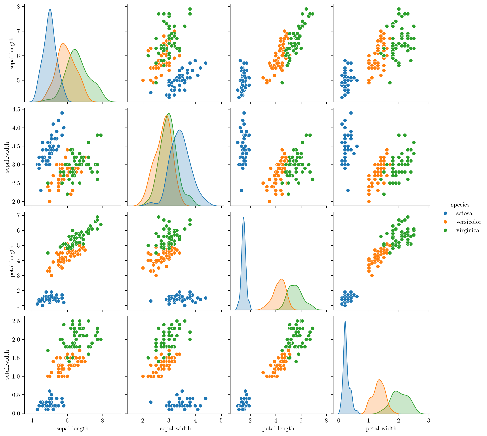

import numpy as np
import seaborn as sns
import matplotlib.pyplot as plt
from matplotlib.colors import ListedColormap
from sklearn.model_selection import train_test_split
from sklearn.preprocessing import StandardScaler
from sklearn.datasets import make_moons, make_circles, make_classification
from sklearn.ensemble import RandomForestClassifier
%matplotlib inline
%config InlineBackend.figure_format = 'retina'Random Forest Feature Importance
ML
from latexify import latexify, format_axes
try:
latexify(columns=2)
except:
pass# Load IRIS dataset from Seaborn
iris = sns.load_dataset('iris')
X, y = iris.iloc[:, :-1], iris.iloc[:, -1]iris| sepal_length | sepal_width | petal_length | petal_width | species | |
|---|---|---|---|---|---|
| 0 | 5.1 | 3.5 | 1.4 | 0.2 | setosa |
| 1 | 4.9 | 3.0 | 1.4 | 0.2 | setosa |
| 2 | 4.7 | 3.2 | 1.3 | 0.2 | setosa |
| 3 | 4.6 | 3.1 | 1.5 | 0.2 | setosa |
| 4 | 5.0 | 3.6 | 1.4 | 0.2 | setosa |
| ... | ... | ... | ... | ... | ... |
| 145 | 6.7 | 3.0 | 5.2 | 2.3 | virginica |
| 146 | 6.3 | 2.5 | 5.0 | 1.9 | virginica |
| 147 | 6.5 | 3.0 | 5.2 | 2.0 | virginica |
| 148 | 6.2 | 3.4 | 5.4 | 2.3 | virginica |
| 149 | 5.9 | 3.0 | 5.1 | 1.8 | virginica |
150 rows × 5 columns
# classes
iris.species.unique()array(['setosa', 'versicolor', 'virginica'], dtype=object)# Pairplot
sns.pairplot(iris, hue="species")
rf = RandomForestClassifier(n_estimators=10,random_state=0, criterion='entropy')rf.fit(X, y)RandomForestClassifier(criterion='entropy', n_estimators=10, random_state=0)In a Jupyter environment, please rerun this cell to show the HTML representation or trust the notebook.
On GitHub, the HTML representation is unable to render, please try loading this page with nbviewer.org.
RandomForestClassifier(criterion='entropy', n_estimators=10, random_state=0)
X.shape(150, 4)# X has feature names
# feature_names = X.columns.tolist() # Assuming X is a pandas DataFrame
# feature_names
# rf.fit(X, y, sample_weight=None, feature_names=feature_names)# Plot trees in forest via graphviz
from sklearn.tree import export_graphviz
import graphviz
# Visualize each tree in the Random Forest
for i, tree in enumerate(rf.estimators_):
# Create DOT data for the i-th tree
dot_data = export_graphviz(tree, out_file=None,
feature_names=iris.columns[:-1],
class_names=iris.species.unique(),
filled=True, rounded=True,
special_characters=True,
node_ids=True)
# Use Graphviz to render the DOT data into a graph
graph = graphviz.Source(dot_data)
# Save or display the graph (change the format as needed)
graph.render(filename=f'../figures/ensemble/feature-imp-{i}', format='pdf', cleanup=True)
graph.render(filename=f'../figures/ensemble/feature-imp-{i}', format='png', cleanup=True)from IPython.display import Image
Image(filename='../figures/ensemble/feature-imp-0.png')
# Function to get Nt, NtL, and NtR for each node
def get_node_counts(tree):
n_nodes = tree.tree_.node_count
n_node_samples = tree.tree_.n_node_samples
children_left = tree.tree_.children_left
children_right = tree.tree_.children_right
Nt_values = {}
NtL_values = {}
NtR_values = {}
for node in range(n_nodes):
Nt = n_node_samples[node]
NtL = NtR = 0
if children_left[node] != children_right[node]:
NtL = n_node_samples[children_left[node]]
NtR = n_node_samples[children_right[node]]
Nt_values[node] = Nt
NtL_values[node] = NtL
NtR_values[node] = NtR
return Nt_values, NtL_values, NtR_valuesNt_values, NtL_values, NtR_values = get_node_counts(rf.estimators_[0])
# Print the values for the first few nodes
print("Node\tNt\tNtL\tNtR")
for node in range(12):
print(f"{node}\t{Nt_values[node]}\t{NtL_values[node]}\t{NtR_values[node]}")Node Nt NtL NtR
0 94 31 63
1 31 0 0
2 63 32 31
3 32 29 3
4 29 0 0
5 3 2 1
6 2 0 0
7 1 0 0
8 31 15 16
9 15 0 0
10 16 1 15
11 1 0 0rf.estimators_[0].tree_.n_node_samplesarray([94, 31, 63, 32, 29, 3, 2, 1, 31, 15, 16, 1, 15], dtype=int64)# Number of trees in the forest
M = len(rf.estimators_)
# Number of samples in the dataset
N = len(X)
# Initialize importance scores for each variable
importance_scores = np.zeros(X.shape[1])
# Iterate through each tree and accumulate importance scores
for tree in rf.estimators_:
# nodes is the node_number at which the input X is classified
nodes = tree.apply(X)
# Iterate through each node in the tree
# for node in np.unique(nodes):
for node in range(tree.tree_.node_count):
# Find the samples in the current node
samples_in_node = np.where(node == nodes)[0]
N_t = len(samples_in_node)
# Skip if the current node is a leaf node
if(N_t == 0 or tree.tree_.feature[node] == -2):
continue
N = len(X)
# Calculate p(t), the proportion of samples in the current node
p_t = N_t / N
N_t_l = len(np.where(tree.tree_.children_left[node] == nodes)[0])
N_t_r = len(np.where(tree.tree_.children_right[node] == nodes)[0])
##### don't include the leaf nodes - skip it #####
# Calculate impurity reduction at the node
impurity_reduction = tree.tree_.impurity[node] - \
(N_t_l / N_t) * tree.tree_.impurity[tree.tree_.children_left[node]] - \
(N_t_r / N_t) * tree.tree_.impurity[tree.tree_.children_right[node]]
# Find the feature used at the current node
feature_index = tree.tree_.feature[node]
# Update importance scores for the feature
importance_scores[feature_index] += p_t * impurity_reduction
# Normalize importance scores by the number of trees
importance_scores /= M
importance_scoresnp.unique(nodes)tree.get_n_leaves()from sklearn.tree import DecisionTreeClassifier
from sklearn.datasets import load_iris
# Load the Iris dataset
iris = load_iris()
X = iris.data
y = iris.target
# Create a DecisionTreeClassifier
tree = DecisionTreeClassifier()
tree.fit(X, y)
# Function to get the path of a data point through the decision tree
def get_tree_path(tree, X):
node_indicator = tree.decision_path(X)
leaf_id = tree.apply(X)
paths = []
for sample_id, leaf in enumerate(leaf_id):
node_index = node_indicator.indices[node_indicator.indptr[sample_id]:
node_indicator.indptr[sample_id + 1]]
path = []
for node_id in node_index:
if leaf_id[sample_id] == node_id:
path.append(node_id)
break
path.append(node_id)
paths.append(path)
return paths
# Get the paths for each data point
paths = get_tree_path(tree, X)
# Print the paths for the first few data points
print("Paths for the first few data points:")
for i, path in enumerate(paths[:5]):
print(f"Data point {i + 1}: {path}")# from sklearn.tree import DecisionTreeClassifier
# from sklearn.datasets import load_iris
# # Load the Iris dataset
# iris = load_iris()
# X = iris.data
# y = iris.target
# # Create a DecisionTreeClassifier
# tree = DecisionTreeClassifier()
# tree.fit(X, y)
# # Get Nt, NtL, and NtR values for each node
# Nt_values, NtL_values, NtR_values = get_node_counts(tree)
# # Print the values for the first few nodes
# print("Node\tNt\tNtL\tNtR")
# for node in range(5):
# print(f"{node}\t{Nt_values[node]}\t{NtL_values[node]}\t{NtR_values[node]}")# rf.estimators_[0]
# get_node_counts()
# Get Nt, NtL, and NtR values for each nodeNode Nt NtL NtR
0 94 31 63
1 31 0 0
2 63 32 31
3 32 29 3
4 29 0 0
5 3 2 1
6 2 0 0
7 1 0 0
8 31 15 16
9 15 0 0
10 16 1 15
11 1 0 0# # Number of trees in the forest
# M = len(rf.estimators_)
# M# # Initialize importance scores for each variable
# importance_scores = np.zeros(X.shape[1])
# importance_scores# # Iterate through each tree and accumulate importance scores
# for tree in rf.estimators_:
# tree_importance = tree.tree_.compute_feature_importances(normalize=False)
# importance_scores += tree_importance
# # Normalize importance scores by the number of trees
# importance_scores /= M
# # Now, importance_scores contains the importance of each variable
# # based on the provided formula.tree.tree_.children_left[1]samples_in_node = np.where(7 == nodes)[0]
samples_in_nodetree = rf.estimators_[0]
# Get the indices of the nodes in the tree
nodes = tree.apply(X)
nodes.shape
X.shape'''
tree.tree_.feature: returns the feature used at each node to divide the node into two child nodes.
- no children: -2
- sepal_length: 0
- sepal_width: 1
- petal_length: 2
- petal_width: 3
'''
'''
tree.tree_.children_left[node]: returns the node number of the left child of the node
tree.tree_.children_right[node]: returns the node number of the right child of the node
if there is no left or right child, it returns -1
'''
tree.tree_.featuretree.tree_.impurity[tree.tree_.children_right[0]]tree.tree_.impurity[0]X.iloc[0]nodesdt0 = rf.estimators_[0]dt0dt0.get_params()dt0.tree_.impurityt = dt0.tree_t.node_countt.n_featurest.n_classest.children_leftt.thresholdt.valuet.compute_feature_importances()import pandas as pd
ser = pd.Series(rf.feature_importances_, index=iris.columns[:-1])
ser.plot(kind='bar', rot=0)
format_axes(plt.gca())np.array([x.tree_.compute_feature_importances() for x in rf.estimators_]).mean(axis=0)